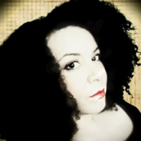

About Me
Hello! My name is Pamela Sanchez Hernandez. I am currently working as a Fine Art Teacher at Cleveland College Prepratory School in Slavic Village. I am also working on my MFA in Fashion Design at Savannah College of Art and Design (SCAD). However I have put that on hold to embark on a 24 week journey learning Full-Stack development at Case Western Reserve University Coding Bootcamp!
My intrests are anything related to Fashion, Art or Design. I have recently become obsessed with the work of David Bowie. This past summer I went to see the David Bowie Is exhibit in New York City. I enjoy visiting museums and traveling.
I hope to learn as much as I can in CWRU coding camp and pursue my dreams of working in Fashion technology. I love teaching and mentoring young students and I plan to continue to do that in an afterschool Arts Enrichment program that focuses on using technology along side traditional forms of Art.